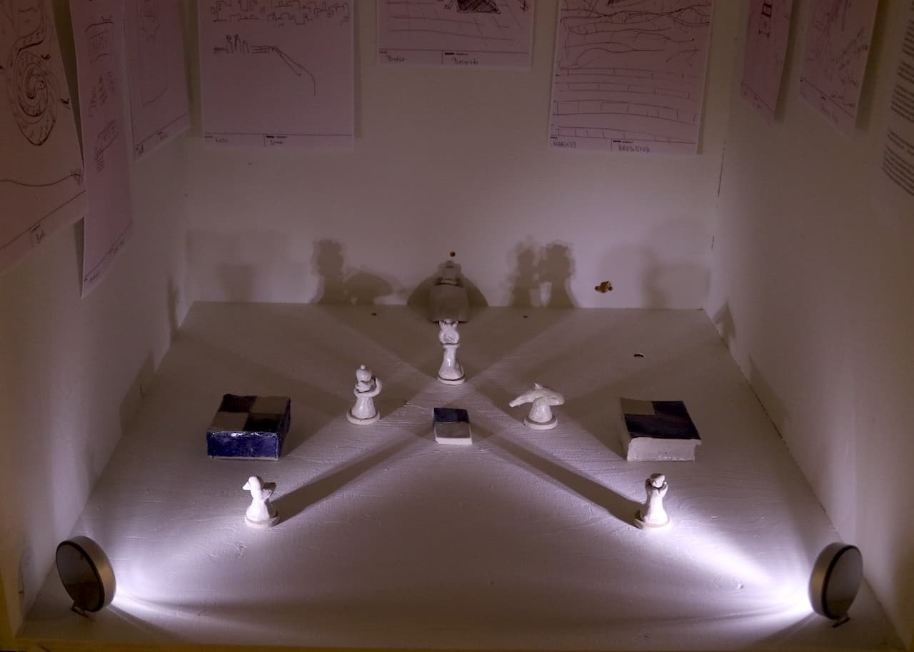
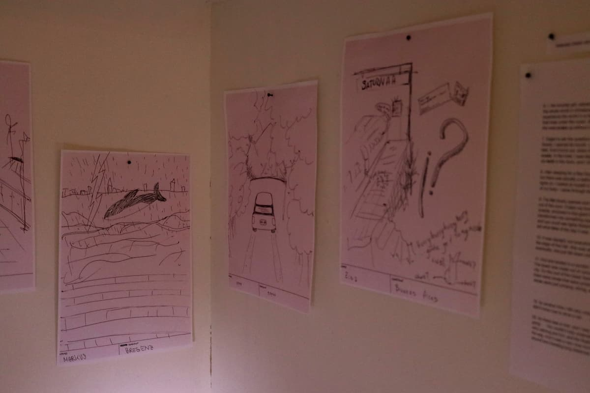
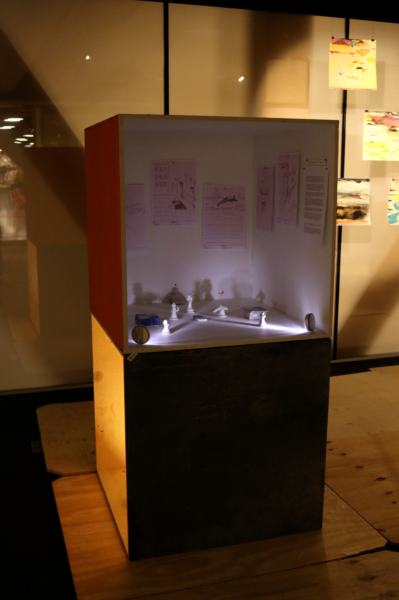

Dream Pieces consists of ceramic chess pieces and selected dream-stories drawn and recorded during Wrong Café—a participatory project that was part of the Välillä Väärässä exhibition. At Wrong Café, thirty visitors were invited to pay for coffee with dreams and to connect their own dream-story to the previous one, gradually forming a single, continuous folklore. In this new work, symbols from six dreams were selected and transformed into chess pieces: duck as the pawn, fist as the rook, serpent as the bishop, orca as the knight, time as the queen, and bed as the king.
The fragmented chessboard references the chess tables on the first floor of Oodi Library, where strangers gather to play and form temporary communities. Placed one floor above, this work mirrors that social ritual while shifting the focus from competition to reflection, and from reason to absurdity. By reshaping chess through the language of dreams, the work allows rational order and hierarchy to dissolve into symbolic and intuitive meanings.
Dream Pieces (2025)
Ceramics · Participatory Art


